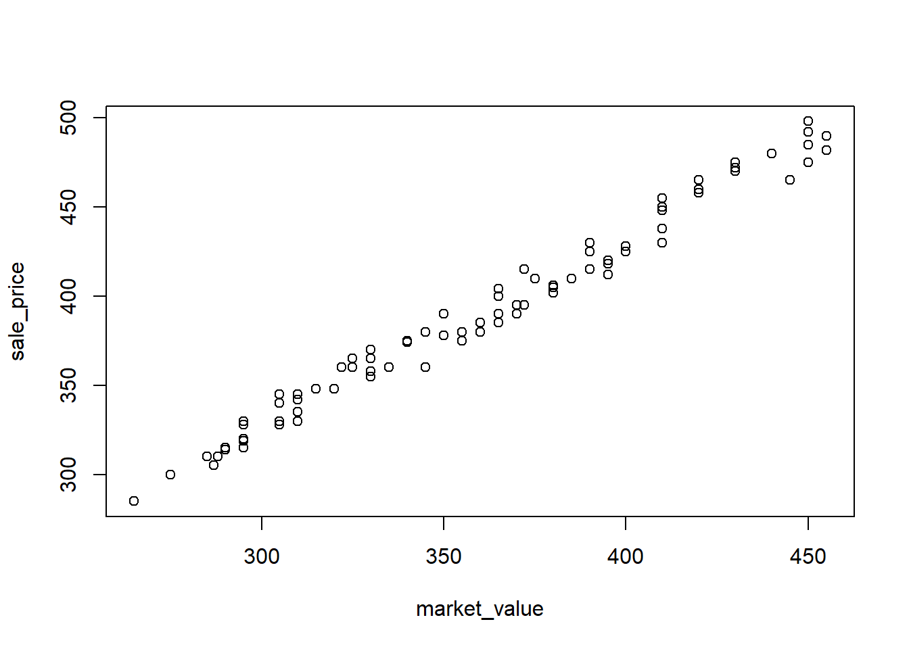

Exercise 2 (Predicting home sales price.) Real estate investors, homebuyers, and homeowners often use the appraised (or market) value of a property as a basis for predicting sale price. Please look at the provided dataset MARKET.csv. All the money are in 1000 dollars.
Propose a simple linear model to relate the appraised market value \(x\) to the sale price \(y\).
A scatterplot of the data is shown below. Does it appear that a straight-line model will be an appropriate fit to the data?
A R simple linear regression printout is also shown below. Find the equation of the best-fitting line through the data on the printout.
Interpret the \(y\)-intercept of the least squares line. Does it have a practical meaning for this application? Explain.
Interpret the slope of the least squares line.
Over what range of \(x\) is the interpretation meaningful?
Use the least squares model to estimate the mean sale price of a property appraised at $300,000.

Call:
lm(formula = sale_price ~ market_value)
Residuals:
Min 1Q Median 3Q Max
-14.674 -5.480 -1.287 6.300 13.409
Coefficients:
Estimate Std. Error t value Pr(>|t|)
(Intercept) 10.72069 5.01930 2.136 0.0352 *
market_value 1.05305 0.01399 75.256 <2e-16 ***
---
Signif. codes: 0 '***' 0.001 '**' 0.01 '*' 0.05 '.' 0.1 ' ' 1
Residual standard error: 7.234 on 98 degrees of freedom
Multiple R-squared: 0.983, Adjusted R-squared: 0.9828
F-statistic: 5663 on 1 and 98 DF, p-value: < 2.2e-16
\(y=\beta_0+\beta_1 x+\epsilon\).
Yes, the data appears to demonstrate a straight-line relationship.
\(\hat y =10.721+1.053x\), or sale_price=10.721+1.053*market_value.
The estimated intercept \(\hat\beta_0=10.721\) represents the expected sale price when the market value \(x=0\). Because a market value of \(0\) is not observed in the data and is not realistic in this application, the \(y\)-intercept should not be interpreted in a practical sense. Instead, it serves primarily as a mathematical component of the fitted regression line.
The estimated slope \(\hat\beta_1=1.053\) represents the expected change in the sale price for a one-unit increase in the market value. Specifically, for each $1000 increase in the market value, the sale price is expected to increases by $1053.
About the range, within $200k to $500k, where most of the data points are clustered, could be the interpretation meaningful.
When the market value is 300k, we know that \(x=300\). Then sale_price=10.721+1.053*300=326.621. So the sales price is estimated to be around $326621.
Exercise 3 A study shows that during a certain sport the mean heart rate \(y\) and the maximal oxygen uptake \(x\) might have relations. The dataset SPORTHR.csv shows \(y\) (expressed as a percentage of maximum heart rate) and \(x\) (VO2max). The data are shown in the table.
Since \(x=0\) corresponds to a maximal oxygen uptake of zero, which is physiologically impossible, the \(y\)-intercept doesn’t have a practical interpretation.
For each unit increase in the value of VO2Max, the mean HR is estimated to increase by 0.2697185.
Exercise 4 (Spreading rate of spilled liquid.) A researcher studied the rate at which a spilled liquid will spread across a surface. The mass (in pounds) of the spill after a period of time ranging from 0 to 60 minutes is recorded and shown below (based on the dataset SPILLS.csv). Do the data indicate that the mass of the spill tends to diminish as time increases? If so, how much will the mass diminish each minute?
As time increase, the mass of the spill tends to diminish in a nonlinear way. The scatterplot in this problem clearly shows a significant nonlinear trend. Therefore, the linear model is not the best to describe the data in this scatter plot.
fit <-lm(mass_lb~time_min, data=df)summary(fit)
Call:
lm(formula = mass_lb ~ time_min, data = df)
Residuals:
Min 1Q Median 3Q Max
-0.13940 -0.10890 -0.03874 0.09995 0.23176
Coefficients:
Estimate Std. Error t value Pr(>|t|)
(Intercept) 6.380220 0.071917 88.717 < 2e-16 ***
time_min -0.020033 0.002034 -9.849 8.61e-07 ***
---
Signif. codes: 0 '***' 0.001 '**' 0.01 '*' 0.05 '.' 0.1 ' ' 1
Residual standard error: 0.1372 on 11 degrees of freedom
Multiple R-squared: 0.8981, Adjusted R-squared: 0.8889
F-statistic: 96.99 on 1 and 11 DF, p-value: 8.609e-07
If we fit the linear model, the fitted regression line is \(\hat y\)=6.3802198 - 0.020033\(x\). Since the slope is negative, and the corresponding p-value is very small, there is evidence that the mass of the spill tends to decrease as time increases. Therefore the spill tends to diminish as time increases. Fo each minute increased, the mass is expcted to decrease by 0.020033 lb.
Exercise 5 (Sweetness of orange juice.) To study the sweetness of orange juices, researchers collect some data on the sweetness index (\(y\)) and the amount of pectin (\(x\)) in the orange juice (in \(g/L\)). The dataset is ORANGEJUICE.csv.